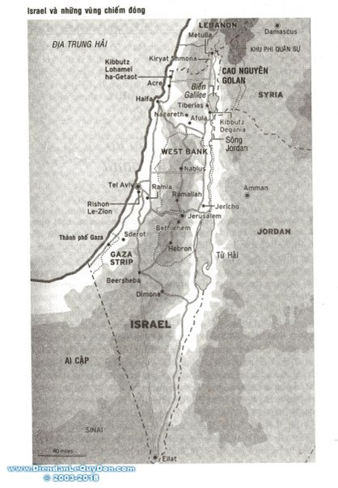

Dẫn Nhập
Nhịp độ của các biến cố ở Trung Đông là dịp may của phóng viên nước ngoài, nhưng là lời nguyền rủa của tác giả quyển sách này. Tôi đã trải nghiệm cả hai cảm giác ấy trong thập niên qua.
Những bùng phát bạo động, những đột phá bất ngờ ở những cuộc đàm phán hòa bình và tính bất thường hay thay đổi của nền chính trị Israel khiến dòng chảy cứ mãi là những câu chuyện với tin tức đầy kịch tính. Chính tính chất của những sự kiện đó cũng tạo ra sự khó khăn để viết thành sách.
Năm 1990, lần đầu tiên tôi đến Jerusalem với vai trò của "người chữa cháy" để theo dõi cuộc Chiến vùng Vịnh cho tờ The Daily Telegraph. Nhiệm vụ tạm thời của tôi kéo dài bảy năm thật hồ hởi sau nhiều lần được gửi tới đây để lấy tin về các biến cố quan trọng-hội nghị hòa bình Madrid năm 1991, cuộc bầu cử năm 1992 đã đưa Yitzhak Rabin lên nắm quyền, những hồ sơ Oslo năm 1993 và khởi đầu khu tự trị của người Palestine, chiến dịch đánh bom tự sát của những chiến binh Hồi giáo, hậu quả của vụ ám sát Rabin năm 1995 và vân vân.
Lúc rời Jerusalem, tôi nghĩ mình đã có được tầm nhìn rộng hơn. Nhưng bằng giọng thương cảm, các đồng nghiệp của tôi đã hỏi: "Tính viết cuốn sách về Trung Đông hẳn? Làm sao anh có thể viết thành sách khi câu chuyện cứ thay đổi xoành xoạch?"
Như họ tiên đoán, tôi thấy mình thường phải khơi lại những chuyện đã qua để nói đến những diễn biến quan trọng-cuộc bầu cử của Ehud Barak, việc rút quân của Israel khỏi nam Lebanon và sự vội vã tìm một thỏa thuận hòa bình lâu dài. Vừa khi tôi nghĩ mình đã tóm lược đâu vào đấy tình hình thì vụ Al- Aqsa Intifada nổ ra.
Khi tôi bắt tay viết lại, tài liệu vứt bỏ mà lúc đó coi là không còn giá trị, tôi lại nhận ra rằng Intifada là sự kiện quan trọng-nơi mà từ đó được coi là con đường dữ dội dẫn tới cương vị nhà nước Palestine, cuộc thử nghiệm về sự tự trị của Palestine và những lực lượng đã phá hủy nỗ lực này tại "bàn hòa giải."
Tôi đã cố gắng vẽ nên hình ảnh văn hóa của người Israel và Palestine, tìm cách diễn giải các yếu tố lịch sử, tôn giáo và văn hóa-những biểu tượng của bản sắc-tạo nên hai dân tộc này. Nó không phải biên niên sử chính trị về những khúc quanh trong "tiến trình hòa bình." Tuy thế, thật là nản để cố gắng tô vẽ một chủ đề cử động luôn, cứ hoài thay đổi, khó chịu nhưng chấp nhận những trang phục mới. Như bất kỳ hình ảnh nào, nhưng phần mà tôi làm nổi bật tường tận và những phần mà tôi lướt đi bằng nhưng nhát nhanh đều mang tính chọn lọc có chủ tâm, nhưng tôi hy vọng rằng bức tranh sơn dầu nắm bắt được điều gì đó là tính chất cốt yếu của hai dân tộc này, nhưng con người như nhau theo nhiều cách, thế mà lại quá khác biệt không thể dung hòa.
Tôi đã lập luận rằng phản ứng của các du khách đối với Israel và Palestine trong thế kỷ qua đã nói lên là, có bao nhiêu người quan sát thì có bấy nhiêu quốc gia. Như thế tôi có thể tuyên tín rằng: Tôi đã sinh ra ở Roma, vậy hẳn tôi phải là người Công giáo Roma.
Cuốn sách này đã chẳng thể được viết ra nếu không có sự giúp đỡ, sự nhiệt tình và tài năng của nhiều người. Họ là nhưng nhà nghiên cứu, thông dịch viên, phóng viên, cùng nhưng tài liệu viết hoặc trao đổi qua lại trong nhiều năm.
Tác giả



.